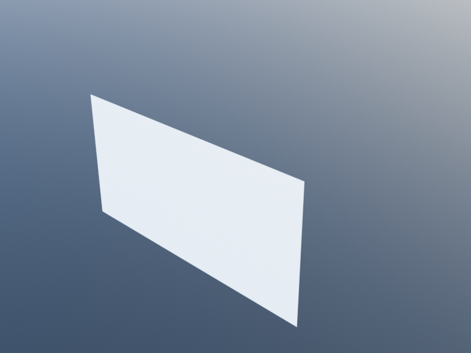
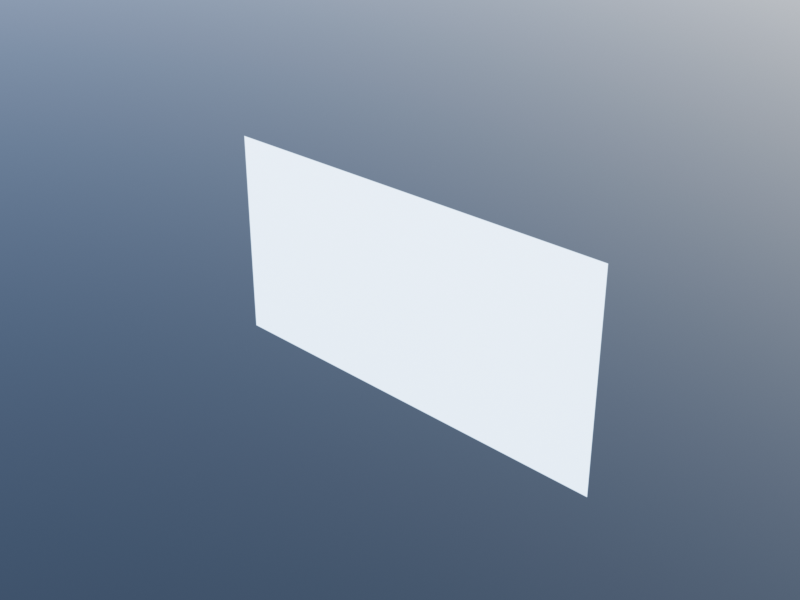

Wall Graph
The WallGraph module provides a junction-aware wall network representation. Instead of creating walls as independent paths that must be manually joined, you describe a network of wall segments connected at junction points. The system automatically resolves junction geometry – mitering L-corners, extending abutting walls at T-junctions – by merging chains of segments into multi-vertex wall paths.
A wall graph can be constructed directly (for full control over wall layout) or derived automatically from a Spaces floor plan. In either case, the same chain-merging and junction resolution logic applies.
For a guided walkthrough with worked examples, see the Wall Graph Tutorial.
Concepts
Junctions, Segments, and Chains
A junction is a point where wall segments meet. Each junction has a valence – the number of segments connected to it:
- Valence 1 (free end): a dead-end wall. The wall gets a flat perpendicular cap.
- Valence 2 (elbow): an L-corner where two segments meet. The segments are merged into a single multi-vertex wall path, and the existing miter math produces a clean corner joint.
- Valence 3 (T-junction): one wall passes through while another abuts it. The through-wall continues uninterrupted; the abutting wall extends to meet the through-wall's face.
- Valence 4+ (cross): two or more walls cross at a point. Each collinear pair is identified and treated as a through-wall.
| Single wall (v1) | L-junction (v2) | T-junction (v3) | Cross (v4) | Full house |
|---|---|---|---|---|
 |  |  |
Arc segments preserve curvature end-to-end on BIM backends:
| Single arc | Lens-shaped curved room |
|---|---|
 |  |
A chain is a maximal sequence of segments connected at valence-2 junctions (elbows) with the same wall family and offset. Chains are the units that get merged into single wall paths. At T-junctions, chains continue through the collinear ("through") pair, so a wall that passes through several T-junctions becomes a single chain.
Resolution Pipeline
The resolve function transforms the graph topology into concrete geometry:
- Chain detection: walk the graph, grouping segments into maximal chains.
- Path merging: each chain becomes one multi-vertex
open_polygonal_path(orclosed_polygonal_pathfor loops). The existingoffset_vertices/v_in_vmiter math handles corner joints automatically. - T-junction extension: abutting walls at T-junctions have their endpoints extended by the through-wall's half-thickness, so they meet the through-wall's outer face.
- Opening repositioning: door and window positions are adjusted to account for segment ordering and orientation within the merged chain.
Backend Dispatch
The build_walls function dispatches on backend capability via the HasWallJoins trait:
- Non-BIM backends (default): chains are resolved and merged into multi-vertex wall paths with pre-computed junction geometry.
- BIM backends (Revit, ArchiCAD, etc.): one wall is created per segment, and the backend's native wall-join logic handles junctions. BIM backends opt in by overriding
has_wall_joins.
Types
WallJunction
A junction point where wall segments meet.
mutable struct WallJunction
position::Loc
segments::Vector{Int} # indices into WallGraph.segments
endJunctions are not constructed directly. Use junction! or wall_path!.
WallSegment
A wall segment connecting two junctions, with optional openings.
mutable struct WallSegment
junction_a::Int # index into WallGraph.junctions
junction_b::Int
family::WallFamily
offset::Real
openings::Vector{WallSegmentOpening}
endSegments are not constructed directly. Use segment! or wall_path!.
WallSegmentOpening
An opening (door or window) placed on a segment at a given distance from junction_a.
struct WallSegmentOpening
kind::Symbol # :door or :window
distance::Real # meters from junction_a along centerline
sill::Real # height above floor (0 for doors)
family::Union{DoorFamily, WindowFamily}
endOpenings are created with add_wall_door! or add_wall_window!.
WallGraph
The graph itself: a collection of junctions and segments spanning between two levels.
mutable struct WallGraph
junctions::Vector{WallJunction}
segments::Vector{WallSegment}
bottom_level::Level
top_level::Level
endCreate with wall_graph.
ResolvedChain
The result of resolving a chain: a merged path with repositioned openings and a record of which segments were merged.
struct ResolvedChain
path::Path
family::WallFamily
offset::Real
openings::Vector{WallSegmentOpening}
source_segments::Vector{Int} # original segment indices
endProduced by resolve. Not constructed directly.
Construction Functions
wall_graph
Create an empty wall graph.
wall_graph(; level=default_level(),
height=default_level_to_level_height()) -> WallGraph| Parameter | Default | Description |
|---|---|---|
level | default_level() | Bottom level for all walls in the graph |
height | default_level_to_level_height() | Floor-to-floor height (top level is computed) |
wg = wall_graph(level=level(0), height=3.0)junction!
Add a junction at a given position. Returns the junction index.
junction!(wg::WallGraph, position) -> Intj1 = junction!(wg, xy(0, 0))
j2 = junction!(wg, xy(10, 0))segment!
Add a wall segment between two junctions. Returns the segment index.
segment!(wg::WallGraph, j_a::Int, j_b::Int;
family=default_wall_family(),
offset=0) -> Int| Parameter | Default | Description |
|---|---|---|
family | default_wall_family() | Wall family (thickness, materials) |
offset | 0 | Thickness distribution (0 = centered, 1/2 = all left) |
s = segment!(wg, j1, j2, family=wall_family(thickness=0.3))wall_path!
Add a sequence of junctions and segments from a list of points. Junctions are auto-merged with existing ones within collinearity_tolerance(). Returns a vector of segment indices.
wall_path!(wg::WallGraph, points...;
closed=false,
family=default_wall_family(),
offset=0) -> Vector{Int}| Parameter | Default | Description |
|---|---|---|
closed | false | Whether to connect the last point back to the first |
family | default_wall_family() | Wall family for all segments |
offset | 0 | Wall offset for all segments |
# Open wall path: 3 points, 2 segments
wall_path!(wg, xy(0,0), xy(10,0), xy(10,5))
# Closed perimeter: 4 points, 4 segments
wall_path!(wg, xy(0,0), xy(10,0), xy(10,8), xy(0,8), closed=true)When paths share endpoints, the auto-merge mechanism detects this and creates T-junctions or elbows as appropriate:
wg = wall_graph()
wall_path!(wg, xy(0,0), xy(10,0)) # south wall
wall_path!(wg, xy(5,0), xy(5,5)) # interior wall, shares xy(5,0)
# -> T-junction created at xy(5,0)addwalldoor!
Place a door on a segment. Returns the WallSegmentOpening.
# By segment index
add_wall_door!(wg::WallGraph, seg_idx::Int;
at=nothing,
family=default_door_family()) -> WallSegmentOpening
# By junction pair (finds the connecting segment)
add_wall_door!(wg::WallGraph, j_a::Int, j_b::Int; ...) -> WallSegmentOpening| Parameter | Default | Description |
|---|---|---|
at | nothing | Distance in meters from junction_a. nothing centers the opening. |
family | default_door_family() | Door family (width, height, materials) |
# Door centered on segment
add_wall_door!(wg, s1)
# Door 2 meters from junction_a
add_wall_door!(wg, s1, at=2.0)
# Door on segment between junctions j3 and j4
add_wall_door!(wg, j3, j4, family=door_family(width=1.2, height=2.2))addwallwindow!
Place a window on a segment. Returns the WallSegmentOpening.
# By segment index
add_wall_window!(wg::WallGraph, seg_idx::Int;
at=nothing,
sill=0.9,
family=default_window_family()) -> WallSegmentOpening
# By junction pair
add_wall_window!(wg::WallGraph, j_a::Int, j_b::Int; ...) -> WallSegmentOpening| Parameter | Default | Description |
|---|---|---|
at | nothing | Distance in meters from junction_a. nothing centers the opening. |
sill | 0.9 | Sill height above the floor in meters |
family | default_window_family() | Window family (width, height, materials) |
# Window centered, default sill height
add_wall_window!(wg, s1)
# Window at specific position and sill
add_wall_window!(wg, s1, at=3.0, sill=1.0,
family=window_family(width=1.4, height=1.5))Resolution and Building
resolve
Transform the wall graph topology into resolved chains. Returns a vector of ResolvedChain.
resolve(wg::WallGraph) -> Vector{ResolvedChain}This function:
- Detects chains (maximal runs of same-family segments through valence-2 and through-pair junctions)
- Merges each chain into a single multi-vertex path
- Extends abutting walls at T-junctions to meet through-wall faces
- Repositions openings to reflect the merged path coordinates
chains = resolve(wg)
for c in chains
println("$(length(c.source_segments)) segments -> $(length(path_vertices(c.path))) vertices")
endbuild_walls
Create wall, door, and window BIM objects from the wall graph. Returns a named tuple (walls=..., doors=..., windows=...).
build_walls(wg::WallGraph) -> NamedTupleDispatches on the current backend's HasWallJoins trait. For non-BIM backends, calls resolve internally to produce merged wall paths.
result = build_walls(wg)
result.walls # Vector of Wall objects
result.doors # Vector of Door objects
result.windows # Vector of Window objectsBackend Trait
HasWallJoins
Controls whether build_walls resolves junction geometry in Julia or delegates to the backend.
struct HasWallJoins{T} end
has_wall_joins(::Type{<:Backend}) = HasWallJoins{false}()BIM backends that handle wall joins natively should override:
KhepriBase.has_wall_joins(::Type{MyBIMBackend}) = HasWallJoins{true}()Integration with Spaces
The Spaces module uses WallGraph internally. When you call build(plan::FloorPlan), the build process:
- Classifies polygon edges into interior/exterior segments (unchanged).
- Constructs a
WallGraphfrom those segments, with junctions at every polygon vertex. - Resolves chains – exterior walls merge into perimeter paths with proper mitered corners; interior walls at T-junctions extend to meet the perimeter.
- Creates walls from the resolved chains and places doors and windows with adjusted positions.
This means floor plans automatically benefit from junction geometry without any changes to existing Spaces code. A house with 16 edge segments might produce only 3-5 merged walls instead of 16 individual ones.
Curved walls
Wall segments may carry an ArcPath so the graph preserves circular curvature end-to-end. This is the native representation for arc- shaped buildings: the BIM backend receives a curved wall(arc_path, …) rather than a polyline approximation, adjacency classification uses cocircular_overlap for arc-arc shared boundaries, and the chain resolver merges co-circular sub-arcs into a single ArcPath.
See Also
- Wall Graph Tutorial – guided examples from simple walls to complex layouts.
- Spaces – the space-first layout system that uses WallGraph internally.
- Vertical Elements – reference for
wall,door, andwindow, the BIM primitives thatbuild_wallsgenerates.
API Reference
KhepriBase.arc_arc_intersection_2d — Method
Intersections of two 2D circles. Returns 0, 1, or 2 points.
KhepriBase.arc_segment! — Method
Create a circular-arc wall segment sweeping from j_a to j_b around center through amplitude radians.
KhepriBase.junction_cap_polygon — Function
Junction cap polygon vertices at a valence-≥3 junction, in CCW angular order.
KhepriBase.line_arc_intersection_2d — Method
Intersections of a 2D parametric line with a circle. Returns 0, 1, or 2 points.